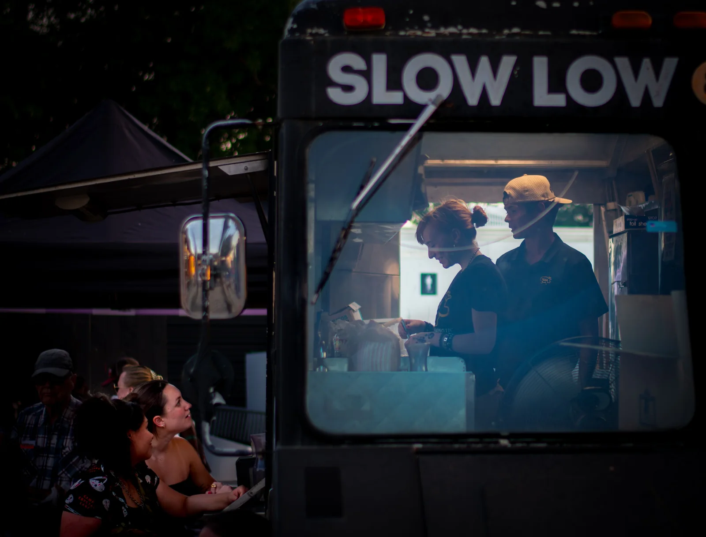

Local guide. Real human.Browse freely. Call or text when a question comes up.
The South Austin difference
Not one neighborhood. Not one personality. Definitely not one-size-fits-all.
Established streetsRanch homes, mature trees and neighborhoods that have had time to grow into themselves.
Everyday convenienceParks, grocery stores, local food and major routes are woven into daily life.
Room for contrastOriginal homes, thoughtful remodels and newer infill often share the same few blocks.
Close without feeling downtownStay connected to central Austin while coming home to a more residential pace.
Explore the neighborhoods
Start with the feel.
You do not need to know every neighborhood name before you start. Filter by the qualities that matter, then open each card for a quick, practical read.
01
Cherry Creek
Established South Austin streets, practical floor plans and quick access to everyday errands. Cherry Creek is broad enough to offer variety without losing its easygoing residential rhythm.
EstablishedMature treesNeighborhood parks
The feel
Comfortable, familiar and unpretentious, with quiet interior streets away from the busier corridors.
Homes
Mostly detached homes, including classic ranch plans, later additions and a steady mix of remodels.
Nearby
Westgate, William Cannon, local shopping and Cherry Creek Neighborhood Park.
02
Garrison Park
A central South Austin pocket organized around a true neighborhood park. It keeps Menchaca Road's food and patios close while the residential streets remain noticeably calmer.
Close-inPark & poolRanch homes
The feel
Active around the park, quieter a few blocks away and easy to settle into without much pretense.
Homes
Established single-story homes, updated originals and selective infill on compact city lots.
Nearby
Garrison District Park, Garrison Pool, a shared-use trail and Menchaca Road.
03
South Manchaca
Close to central Austin without feeling polished into sameness. Older cottages, ranch homes, duplexes and newer infill give the neighborhood a mixed, genuinely Austin texture.
Close-inMixed housingLocal character
The feel
Residential, eclectic and connected, with a little more edge than the master-planned parts of town.
Homes
Original smaller homes, expanded floor plans, duplexes and modern infill in the same general area.
Nearby
South Lamar, Westgate, Stassney, Menchaca Road and quick routes toward downtown.
04
Westgate
Tree-lined streets and older South Austin homes near one of the area's most useful retail hubs. Westgate feels tucked away even when groceries, restaurants and major routes are close.
Big treesClose-inConvenient
The feel
Quiet and established, with easy access to the parts of South Austin used in everyday life.
Homes
Mid-century and later ranch homes, renovated originals and occasional newer construction.
Nearby
Central Market Westgate, Sunset Valley retail, South Lamar and Ben White.
05
Western Trails
Classic South Austin ranch-home territory with broad canopies and lots that often feel more generous than newer subdivisions. The interior streets are calm; Westgate and Sunset Valley are close.
Larger-feeling lotsRanch homesBig trees
The feel
Settled, shaded and residential, with the visual character many people picture when they think of older Austin.
Homes
Predominantly detached ranch-style homes, including originals, careful remodels and expanded plans.
Nearby
Westgate, Sunset Valley, Ben White and straightforward access toward central Austin.
06
Maple Run
A leafy southwest pocket with curving streets, cul-de-sacs and convenient access to one of South Austin's most useful district parks. It feels removed without being disconnected.
Park accessCurving streetsEstablished
The feel
Relaxed and suburban in the best sense: less through-traffic, more shade and room for everyday routines.
Homes
Detached homes with a mix of single- and two-story plans, garages and established landscaping.
Nearby
Dick Nichols District Park, its pool and pickleball courts, plus Mopac and William Cannon.
07
Sunset Valley
A small independent city surrounded by Austin, prized for green space, trail connections and homes that can offer more breathing room than many close-in neighborhoods.
More spaceGreen spaceClose-in
The feel
Low-key and spacious, with a distinctive identity despite being surrounded by the larger city.
Homes
A limited and varied supply, including older homes, larger lots and properties with uncommon privacy.
Nearby
Sunset Valley trails, Westgate shopping, Mopac and quick access to central South Austin.
08
Olympic Heights
A newer-feeling neighborhood of winding streets, pocket parks and closely connected blocks near the expanding food-and-entertainment scene farther south on Menchaca Road.
Newer homesPocket parksSouth Menchaca
The feel
Friendly, organized and active, with sidewalks and small green spaces built into the neighborhood pattern.
Homes
Mostly two-story detached homes with compact yards, garages and more contemporary floor plans.
Nearby
Menchaca Road venues, Slaughter Lane, Mary Moore Searight Metropolitan Park and daily retail.
09
Battle Bend
Compact, under-the-radar and well positioned near South Congress and Ben White. Battle Bend offers straightforward access in several directions without the name recognition premium of flashier areas.
Under the radarClose-inEstablished
The feel
Modest and practical, with a residential core close to active commercial corridors.
Homes
Smaller detached homes, many with mid-century roots, plus remodels and gradual reinvestment.
Nearby
South Congress, Ben White, St. Elmo and convenient routes toward downtown or the airport.
10
Shady Hollow
An established community south of Slaughter Lane with mature trees, greenbelt access and a more spacious suburban pace than the close-in pockets farther north.
More spaceGreenbeltsMature trees
The feel
Quiet, shaded and settled, with neighborhood amenities and less of the close-in urban texture.
Homes
Detached homes on generally roomier lots, with a mix of one- and two-story plans.
Nearby
Slaughter Lane, greenbelt trails, Mary Moore Searight and the south Menchaca corridor.
The everyday rhythm
Useful and interesting.
South Austin works because the things you need and the places you enjoy are often part of the same ordinary week.
Daylight
Coffee windows, taco trucks and independent spots make it easy to keep a normal errand from feeling completely generic.
Outside
Garrison, Dick Nichols and Mary Moore Searight bring pools, trails, courts and open space into the weekly routine.

After dark
Menchaca Road, South First and St. Elmo offer patios, food and low-key nights without requiring a downtown plan.
Featured Business
LeRoy and Lewis Barbecue
New School BBQ. Old School Service.
What began as a food truck at Cosmic in 2017 now has a permanent home on Emerald Forest Drive. LeRoy and Lewis builds its menu around locally sourced Texas meats, inventive cuts and a full bar—without losing the counter-service ease that made it a South Austin favorite. The Michelin-starred restaurant proves great barbecue does not have to follow the usual script.
Start with
Beef cheeks, pulled whole hog, Frito pie and kale Caesar slaw.
Find it
5621 Emerald Forest Drive Austin, TX 78745
South Austin's housing is layered. The right fit may be an untouched original, a careful remodel, newer construction or a lower-maintenance place close to everything.
01
Classic ranch
Single-story plans, usable yards and established streets with decades of shade.
02
Updated original
Older bones with modern kitchens, opened living areas and improvements that preserve character.
03
New infill
Contemporary layouts and newer systems, often on compact lots within older neighborhoods.
04
Lock-and-leave
Condos, townhomes and smaller-lot communities for buyers prioritizing location over yard work.
No form. No chatbot.
Ask a human.
Tell Michael what you are trying to figure out—neighborhood fit, current homes, commute tradeoffs or whether South Austin is right for you.
Michael Mechler has worked in Austin real estate since 2013. He helps buyers compare neighborhoods by the way they actually want to live—not just by beds, baths and a pin on a map.
SouthAustin.com is designed to be useful before you are ready to talk. When a question comes up, the call and text buttons connect directly to Michael.